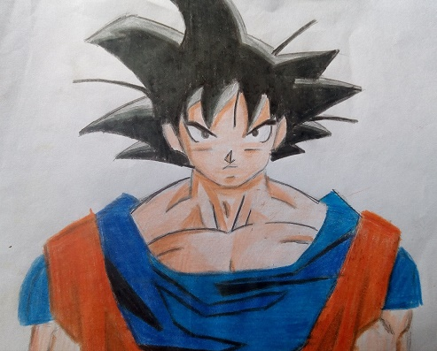

Goku

Goku é inspirado num personagem com o mesmo nome, personagem principal do romance Jornada ao Oeste.
Porém, Toriyama mudou algumas de suas características para ser mais original.
Goku é apresentado como um menino estranho, com rabo de macaco e força sobre-humana.
Conforme a história se desenrola, é revelado que ele descende de uma raça fictícia
chamada Saiyajins, uma das raças mais poderosas do universo.